Каковы были основные мероприятия Николая I во внешней политике? Чем они завершились?
1. Кавказская война 1817—1864 гг.
После присоединения Грузии, части Армении и Азербайджана границы Российской империи (образованной здесь Имеретинской области) подошли к территориям Северного Кавказа. Здесь издавна проживали племена самых разных народностей (обобщённо их называли горцами). С давних времён у горцев сложился особый уклад жизни, важную роль в котором играли набеги. Они были главным занятием мужского населения из-за того, что гористая местность не позволяла активно заниматься сельским хозяйством. Особенно часто горцы совершали набеги на грузинские земли.
После присоединения Грузии к России эти набеги ослабли, но не прекратились. Так Россия столкнулась с постоянной необходимостью обороняться. Однако из-за того, что горы служат естественной крепостью, оборона и ответные операции были очень трудны. По этим причинам подобные вылазки горцев часто оканчивались успехом.
В 1816 г. военное и гражданское управление на Кавказе возглавил генерал А. П. Ермолов, командир отдельного Грузинского (позже Кавказского) корпуса. Он решил установить спокойствие на границе. Для этого он предложил переселять местное население с гор на равнины, возводить крепости на пути набегов. Тем племенам, которые переходили на российскую сторону, гарантировались льготы (так, в 1825 г. Кабарда признала власть России). Также войска Ермолова предпринимали военные походы в горы. Ермолов основал на Кавказе ряд укреплённых пунктов, которым были даны характерные названия: Преградный стан, крепости Грозная, Внезапная, Бурная.
Работаем с картой
Покажите на карте территории Северного Кавказа, Закавказья, Дагестана, Чечни.
В ответ на экспедиции царских войск горцы совершали набеги на крепости, устраивали засады. С переменным успехом такая ситуация продолжалась несколько лет. Она изменилась к концу 1820-х гг., когда разрозненные северокавказские племена объединили силы на основе единого религиозного учения, которое называлось мюридизм. Его сторонники — мюриды — должны были строго соблюдать нормы ислама (шариат) и вести беспощадную войну с «неверными» (немусульманами). «Рай есть под тенью шашки, — говорили вожди мюридизма. — Убитый в войне против неверных есть живой, и будет он жить в раю, а кто будет бежать — тот есть ничтожный человек, и будущая его жизнь есть ад».
В 1834 г. горцев возглавил духовный лидер имам Шамиль, пользовавшийся особым авторитетом. Он создал государство (имамат), в котором установил строгую дисциплину, систему подчинения, строгие наказания за проступки.
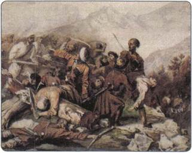
Эпизод сражения русских войск с горцами. Художники М. Ю. Лермонтов и Г. Г. Гагарин
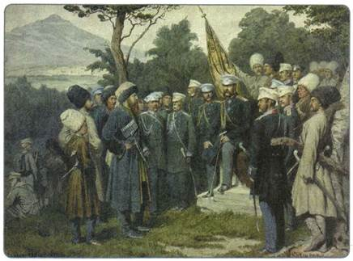
Имам Шамиль перед главнокомандующим князем А. И. Барятинским, 25 августа 1859 г. Художник А. Д. Кившенко
В руках Шамиля была сконцентрирована военная, религиозная и политическая власть. Это способствовало успеху горцев в столкновениях с русскими войсками в 1840-е гг. Однако вскоре ситуация изменилась: государство Шамиля стало слабеть.
Русские войска, которыми с 1856 г. командовал князь А. И. Барятинский, набирались опыта борьбы с противником в сложных условиях гористой местности. Шаг за шагом они стали теснить отряды Шамиля. В 1859 г. пал последний оплот власти имама — аул Гуниб. Шамиль сдался в плен и был сослан в Калугу.
Окончательное покорение горских народов и завершение Кавказской войны произошли только в 1864 г. (уже в правление преемника Николая I на троне — императора Александра II). Победа в кровавой войне утвердила власть России на Кавказе. Далась она дорогой ценой, в боях на Кавказе пали тысячи российских военных. Кавказская война закончилась поражением горцев и присоединением их земель к России.
Включение горных районов Кавказа в состав Российской империи имело позитивное значение для местного населения. С новой властью сюда пришли более совершенная техника земледелия, просвещение и здравоохранение, прогрессивная русская культура, а позже — и промышленное производство. Начался процесс взаимного обогащения культур многонационального кавказского региона.
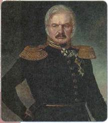
А. П. Ермолов
2. Россия и Западная Европа
На протяжении второй четверти XIX в. Российская империя продолжала играть ведущую роль на мировой арене. Николай I, возглавлявший Священный союз, продолжал политику защиты порядков, установленных Венским конгрессом. Так, участники Священного союза постановили поддерживать друг друга в борьбе с революционными движениями в Европе. В 1849 г. Николай I помог подавить восстание в Австро-Венгрии, послав туда русские войска (ими командовал И. Ф. Паскевич); этим он фактически спас правящий режим Габсбургов, не допустив его свержения. В период революций во Франции (в 1830 и 1848 гг.) и в Бельгии (в 1830 г.) Николай также выступил с призывом к европейским монархам совместным вооружённым выступлением подавить «революционную заразу». Однако этот призыв не был поддержан, поскольку европейские страны опасались возрастания и без того сильного влияния России в Европе.
3. Восточный вопрос
Другим важным направлением внешней политики Николая I был восточный вопрос, тесно связанный с положением слабеющей Османской империи и со стремлением расширить в этом регионе влияние России.
Здесь набирало силу освободительное движение балканских народов, угнетаемых османами. Греки, сербы, черногорцы, болгары и другие народы подвергались притеснениям со стороны властей Турции: поскольку главенствующей религией в Турции являлся ислам, православное население было полностью бесправным.
Главным соперником России на Балканах была Англия, которая также стремилась усилить здесь своё влияние.
Греческое освободительное движение в Османской империи набирало силу. Россия, Англия и Франция оказали помощь боровшимся за независимость грекам: в 1827 г. в Наваринской бухте объединённый англо-франко-русский флот разгромил флот османского паши, посланный для подавления греков.
Вслед за этим Турция объявила войну России. В ходе русско-турецкой войны 1828—1829 гг. операции развернулись на Балканах и на Кавказе.
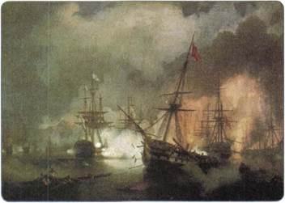
Битва при Наварине. Художник И. К. Айвазовский
На Кавказе русским войскам сопутствовал успех: за три месяца войска под командованием И. Ф. Паскевича взяли крепости Карс, Баязет, Ахалцихи, Эрзурум, а также Анапу, Сухум-Кале (Сухуми) и Поти. На Балканах армия, возглавляемая И. И. Дибичем, одержала ряд побед и продвинулась вплотную к столице — Константинополю (Стамбулу). Это вынудило турок приступить к переговорам о мире.
2 сентября 1829 г. был подписан Адрианополъский мирный договор, по которому Россия получила устье Дуная, всё кавказское побережье Чёрного моря, крепости Ахалцихи, Ахалкалаки с прилегающими районами. Черноморские проливы Босфор и Дарданеллы объявлялись открытыми для прохода торговых судов всех стран. Османская империя вынуждена была признать внутреннюю автономию ряда своих владений: княжества Молдавия и Валахия получали право внутреннего самоуправления, некоторую автономию получала Сербия. Греция получила широкую автономию (чуть позже, в 1830—1832 гг., была установлена полная независимость Греции).
Адрианопольский мир значительно укрепил позиции России на Балканах. Вскоре Османская империя оказалась вновь раздираема внутренними проблемами: восстал правитель Египта, послав к Стамбулу своё войско. Европейские державы отказались поддержать турецкого пашу, помощь ему оказала только Россия: русский флот подошёл к Константинополю и высадил десант для защиты столицы. Османская империя была вынуждена подписать с Россией дружественный Ункяр-Искелессийский договор 1833 г. По нему Россия обязывалась оказывать Турции в случае необходимости военную помощь, а за это получала право контролировать Чёрное море: свободно проходить через проливы Босфор и Дарданеллы (проход другим державам при этом закрывался). Эти договоры чрезвычайно усилили позиции России.
Европейские державы в ответ на это объединили усилия и путём дипломатических интриг заставили Османскую империю пересмотреть Ункяр-Искелессийский договор и отменить его, подписав новый. Этот договор (Лондонская конвенция 1841 г.) был уже не столь выгоден для России. Гарантами безопасности Османской империи стали теперь все ведущие европейские державы, а не только Россия; проливы Босфор и Дарданеллы закрывались для любых военных судов, включая российские.
Работаем с картой
Опираясь на карту, выясните, через какие проливы должен был пройти российский корабль, если он двигался из Феодосии в Неаполь (Босфор, Гибралтар или Дарданеллы). В какой последовательности?
Англия — основной соперник России на Востоке — оказывала противодействие всеми средствами. Между двумя державами шла борьба за влияние не только в Турции, но также в Иране и Средней Азии.
4. Русско-иранская война 1826—1828 гг.
Возникшим в ноябре—декабре 1825 г. периодом междуцарствия в России решил воспользоваться персидский шах. Он давно стремился вернуть территории, отошедшие к России по Гюлистанскому миру 1813 г. В этом его активно поддержала Англия. Она же помогла собрать большую армию для удара по российскому Закавказью. Среди населения Восточного Закавказья велась подготовка к восстанию против русских властей.
Наступление иранской армии в июле 1826 г. оказалось неожиданным для главнокомандующего русскими войсками на Кавказе генерала А. П. Ермолова. Войска управлявшего пограничной областью наследника шаха Аббаса-Мирзы сумели захватить южную часть Закавказья и двинулись в Восточную Грузию. Однако уже через месяц армия Ермолова полностью освободила захваченные противником территории и перенесла войну на территорию Персии.
Назначенный новым командующим кавказскими войсками генерал И. Ф. Паскевич летом 1827 г. предпринял успешное наступление на Ереван и Нахичевань. Затем русская армия форсировала реку Араке и захватила Тавриз. Дорога на Тегеран, столицу Ирана, была открыта. Шах согласился заключить мир на предложенных Россией условиях.
В 1828 г. был заключён Туркманчайский мирный договор, согласно которому к России отошли Ереванское и Нахичеванское ханства (территория Восточной Армении), признавалось исключительное право России иметь военный флот на Каспийском море. Иранский шах должен был заплатить 20 млн рублей в качестве контрибуции. Русские купцы получили право свободно торговать на территории Ирана. Такие итоги войны наносили сильный удар по позициям Англии в Закавказье.
Стремясь ослабить позиции России на Кавказе, Англия попыталась оказывать поддержку горцам во время Кавказской войны 1817—1864 гг., посылая им оружие и военных инструкторов. Между Англией и Россией велась также «торговая война» в странах Востока (в Турции и Персии, а также в Средней Азии): каждая из сторон пыталась добиться для себя экономических преимуществ при ведении торговли в этих землях.
5. Обострение восточного вопроса в начале 1850-х гг.
К началу 1850-х гг. восточный вопрос, давно ставший важнейшим для российской внешней политики, заметно обострился. Одним из главных стремлений Николая I было расширение влияния России на Балканах путём создания там независимых и дружественных государств, которые при поддержке России должны быть образованы на месте слабеющей Османской империи, стремительно теряющей былое могущество. Поводом стал спор о святых местах в Иерусалиме: в 1853 г. османский султан передал католическому духовенству ключи от Вифлеемского храма — одной из главных святынь христианства. Николай, посчитавший это ущемлением православных подданных султана и стремившийся играть роль их «покровителя», потребовал предоставить ключи также и православным священникам. После отказа султана выполнить это требование в июне 1853 г. Россия ввела свои войска в подвластные Турции Дунайские княжества — Молдавию и Валахию. В свою очередь Турция в октябре 1853 г. объявила России войну.
6. Причины Крымской войны 1853—1856 гг.
Николаю казалось, что его войска сумеют быстро разбить противника, а западные страны в конфликт не будут вмешиваться. Австрия и Пруссия, по его мнению, должны были с благодарностью вспоминать о помощи России в подавлении венгерской революции и готовности Николая в случае необходимости прийти на помощь прусскому королю. Франция ещё не оправилась от революционных потрясений 1848 г. Англии после разгрома Турции царь решил пообещать новые территориальные приобретения — Крит и Египет. Однако эти расчёты были ошибочными. Австрия не желала усиления позиций России на Балканах. В этом её поддерживала Пруссия. Новому императору Франции Наполеону III необходимо было упрочить своё внутреннее положение победами во внешней политике. Англия же сама подталкивала Турцию к войне, чтобы любой ценой ослабить позиции России на Востоке.
Таким образом, Россия оказалась вынуждена вести войну не только против Турции, но и против всех крупных держав Европы, сплотившихся с единой целью — разрушить систему международных отношений, в которой со времён Венского конгресса Россия играла решающую роль.
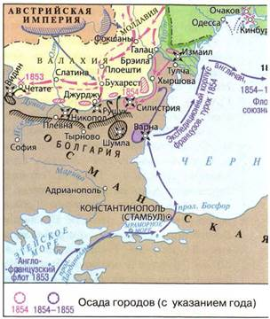
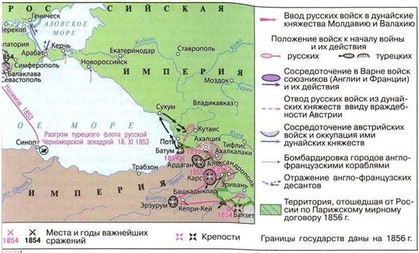
Крымская война 1853—1856 гг.
7. Крымская война: начальный этап
В 1853—начале 1854 г. соперником России выступала одна лишь Османская империя. Военные действия развернулись на трёх фронтах. На Кавказском фронте русские войска успешно противостояли турецким, одержав ряд побед. На Черноморском фронте самым ярким событием начального этапа войны стало Синопское сражение 18 ноября 1853 г. Черноморская эскадра под командованием вице-адмирала П. С. Нахимова, проведя предварительную разведку, атаковала в Синопской бухте превосходивший его по численности турецкий флот. После четырёхчасового боя все корабли турок были потоплены, а их командующий Осман-паша был взят в плен. Планы Турции о высадке десанта на Кавказе оказались сорваны.
На Дунайском фронте в 1854 г. русская армия осадила крепость Силистрию, однако долгая осада к успеху не привела, и войска вынуждены были отступить.
8. Крымская война: вступление в войну Англии и Франции
В 1854 г. начался второй этап войны: против России на стороне Турции выступили Англия и Франция. Ещё в декабре 1853 г. англо-французская эскадра вошла в Чёрное море. России был предъявлен ультиматум с требованием вывести войска из дунайских княжеств. Не получив ответа на свой ультиматум, Англия и Франция в марте 1854 г. объявили России войну. Николай I обратился за помощью к Австрии и Пруссии, но поддержки от них не получил. Эти государства присоединились к требованиям Англии и Франции сохранить целостность Османской империи и вывести русские войска из Молдавии и Валахии. Россия оказалась в полной изоляции. Правда, Англии и Франции не удалось втянуть Австрию, Пруссию и Швецию в войну на своей стороне. Против России выступила лишь Сардиния.
В военных действиях активно участвовал флот. Англо-французские эскадры атаковали на Чёрном море Одессу, на Балтике — Аландские острова, на Баренцевом море — Кольский залив, на Белом море — Соловецкие острова и Архангельск, на Тихом океане — Петропавловск-Камчатский. Все эти нападения были успешно отражены русскими гарнизонами, попытки высадить десанты успеха не имели.
Тем не менее под угрозой вступления в войну Австрии Николай I был вынужден уступить требованиям западных стран. Он приказал вывести войска из дунайских княжеств, которые тотчас же были заняты австрийцами.
Однако главные события войны развернулись в Крыму (отчего и произошло её название — Крымская). В сентябре 1854 г. армия союзников численностью около 60 тыс. человек высадилась в районе Евпатории и начала наступление на Севастополь — главную русскую крепость на Чёрном море. Поражение русских войск под командованием А. С. Меншикова в сентябре 1854 г. в сражении на реке Альме открыло противнику дорогу на Севастополь.
Этот город был неуязвим с моря, но практически беззащитен с суши, слабо укреплён.
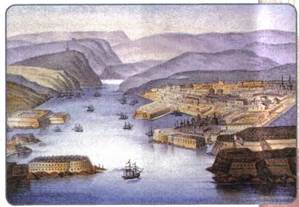
Вид на Севастопольскую бухту с моря
По уровню вооружения Россия отставала от своих противников, ушедших в техническом отношении далеко вперёд. Русская пехота была, как и сто лет назад, вооружена кремнёвыми гладкоствольными винтовками, стрелявшими на расстояние 300 шагов и не всегда попадавшими в цель. А вот войска Англии и Франции располагали более совершенными нарезными ружьями, способными стрелять на расстояние около 1200 шагов. Русский флот был парусным (за исключением нескольких паровых фрегатов), англо-французская эскадра состояла только из паровых судов, в количественном отношении у неё также было преимущество. Отсутствие современной техники отчасти компенсировалось мужеством и самоотверженностью русских солдат и матросов, что в полной мере проявилось при обороне Севастополя.
9. Героическая оборона Севастополя
В сентябре 1854 г. Севастополь был объявлен на осадном положении. Его гарнизон (около 7 тыс. человек) противостоял 67-тысячной союзной армии, поддерживаемой мощным флотом. Оборону Севастополя возглавил начальник штаба Черноморского флота адмирал В. А. Корнилов. Он приказал окружить крепость оборонительными сооружениями, этими работами руководил талантливый инженер Э. И. Тотлебен. Население Севастополя встало на защиту родного города. Тысячи людей днём и ночью работали на строительстве укреплений. В короткий срок город ощетинился грозными бастионами, брустверами и батареями. Для предотвращения входа неприятельских судов в Севастопольскую бухту на рейде была затоплена часть кораблей Черноморского флота. С них были сняты орудия, на берег сошли 10 тыс. матросов, пополнивших ряды защитников города.
Героическая оборона Севастополя длилась 11 месяцев (с сентября 1854 г. по август 1855 г.). За этот период артиллерия противника не раз подвергала город мощным бомбардировкам. Первая из них произошла 5 октября 1854 г., в этот день был смертельно ранен В. А. Корнилов. Руководителем обороны стал П. С. Нахимов. Защитники Севастополя время от времени переходили в контратаки, совершали дерзкие ночные вылазки в стан врага. В этих налётах прославился матрос Пётр Кошка. Самоотверженно помогали отцам, мужьям и братьям женщины Севастополя. Героиней обороны стала Дарья Севастопольская. Эта простая русская женщина оказывала помощь раненым, ухаживала за больными, организовав лазарет. Её считают одной из первых российских сестёр милосердия.
В октябре 1854 г. русские войска, которыми командовал А. С. Меншиков, атаковали противника с тыла: в Балаклавском бою и Инкерманском сражении, окончившемся поражением. Однако эти сражения смогли ослабить силы противника, и активные действия прекратились до 1855 г. Союзники убедились в невозможности быстро занять Севастополь и от штурма перешли к осаде. Зиму 1854/55 г. они вынуждены были провести в Крыму.
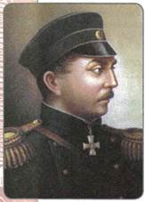
П. С. Нахимов
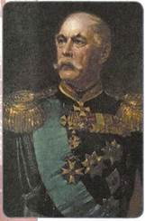
Э. И. Тотлебен
В конце августа 1855 г. были предприняты две последние и самые ожесточённые бомбардировки Севастополя. Город беспрестанно обстреливали 800 орудий. 27 августа начался общий штурм. Русские бойцы стойко держали оборону господствующей высоты города — Малахова кургана. Однако после захвата Малахова кургана они были вынуждены покинуть позиции, так как дальнейшая оборона крепости потеряла всякий смысл. Противником были заняты также Керчь, Анапа, Кинбурн. «Трёхсотсорокадевятидневная оборона Севастополя превосходит Бородино!» — так было сказано в приказе по армии 30 августа 1855 г. Мужество защитников черноморской твердыни потрясло современников, император Николай I приказал считать за год каждый месяц службы в осаждённом Севастополе.
10. Окончание и итоги Крымской войны
На Кавказском фронте военные действия развивались успешнее всего. Здесь войска генерала Н. Н. Муравьёва взяли крепость Ардаган. После взятия неприступной крепости Карс в ноябре 1855 г. им открылась дорога на Эрзурум и далее в Малую Азию. Эта победа не только смягчила условия будущего мира, но и ослабила в русском обществе горечь от поражения в Крыму.
Стало ясно, что союзники не в состоянии продолжать наступление и развивать успех. Им также не удалось вытеснить Россию с берегов Чёрного моря и Тихого океана. «Мы нашли сопротивление, превосходящее всё доселе известное в истории», — писала лондонская газета. В то же время и Россия не могла в одиночку одолеть мощную коалицию: техническое оснащение и вооружение её армии имело много изъянов.
Для обсуждения условий мирного договора в феврале 1856 г. была созвана конференция в Париже. Её участники подписали в марте 1856 г. Парижский мир. По его условиям все потерянные в ходе войны области и города возвращались России и Турции. Россия сохраняла Севастополь в обмен на турецкую крепость Карс. Независимость и целостность Османской империи гарантировались теперь всеми державами — участницами конгресса. Чёрное море объявлялось нейтральным, а потому и Россия, и Турция лишались права иметь здесь свой военный флот. Устанавливалось, что ни одна из держав не имеет права вмешиваться во внутренние дела Турции, гарантировалась автономия Сербии, Молдавии и Валахии в рамках Османской империи.
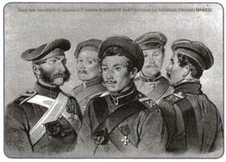
Герои обороны Севастополя: Ф. Елисеев, А. Рыбаков, П. Кошка, И. Димченко, Ф. Заика (слева направо)
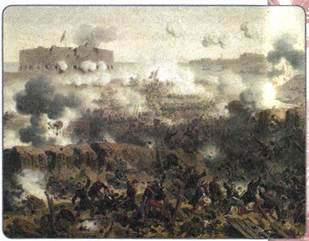
Штурм Малахова кургана
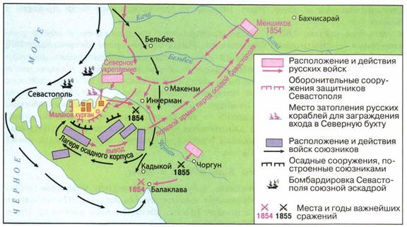
Оборона Севастополя
В Крымской войне Россия противостояла самым крупным и сильным европейским армиям. Она вела борьбу по всему периметру своих границ. Несмотря на серьёзное поражение, Россия вышла из Крымской войны с минимальным уроном. Наиболее болезненным для неё пунктом Парижского мира был запрет иметь военный флот и укрепления на Чёрном море.
ПОДВЕДЁМ ИТОГИ
Активная внешняя политика России, с одной стороны, расширяла границы империи и способствовала росту её влияния в различных районах мира, а с другой — вызывала желание крупнейших европейских держав ограничить пределы этого влияния. В этих условиях их открытое военное столкновение с Россией становилось неизбежным.
Крымская война 1853—1856 гг. не только показала серьёзнейшее отставание российской армии от европейских, но и свидетельствовала о том, что необходимы перемены во всех сторонах российской жизни.
Кавказская война далась очень дорогой ценой. Начавшись в 1817 г., при Николае I, она растянулась на десятилетия и окончилась уже в правление следующего императора — Александра II, в 1864 г.
Вопросы и задания для работы с текстом параграфа
1. Какие особенности имела Кавказская война? 2. Что такое мюридизм?
3. На каких основах был организован имамат? 4. Какие причины привели к русско-турецкой войне 1828—1829 гг.? 5. Почему заключение Адрианопольского и Ункяр-Искелессийского договоров означало усиление позиций России на международной арене? Свой ответ поясните цитатами из текста. 6. Каковы были итоги русско-иранской войны 1826—1828 гг.? 7. Назовите причины, приведшие к Крымской войне. Что послужило поводом к ней? 8. Какие два периода выделяют в ходе Крымской войны? 9. Почему главный удар антироссийской коалиции был направлен против Севастополя? 10. Чем завершилась Крымская война? Охарактеризуйте её итоги.
Работаем с картой
1. Покажите на карте места основных сражений Крымской войны. Пользуясь картой и текстом учебника, составьте рассказ о ходе боевых действий в октябре 1853 — сентябре 1854 г.
2. Перечислите моря и океаны, в которых англо-французский флот в ходе Крымской войны атаковал российские берега.
Думаем, сравниваем, размышляем
1. Охарактеризуйте главные направления внешней политики Николая I. Определите, как изменились международные позиции России. 2. Из текста параграфа выберите информацию о том, как складывалось противостояние России и Англии в период 1820—1850-х гг. 3. Разделившись на группы, привлекая дополнительные материалы и Интернет, соберите информацию о героях Крымской войны, упомянутых в тексте параграфа. Подготовьте (совместно) презентацию. 4. Докажите, используя современные карты, почему после захвата Малахова кургана оборона Севастополя утратила для русской армии всякий смысл. 5. Составьте (в тетради) список художественных произведений, посвящённых теме обороны Севастополя и героизму русских воинов. 6. В обороне Севастополя участвовали многие юные жители города. Используя Интернет, подготовьте сообщение об одном из таких защитников.